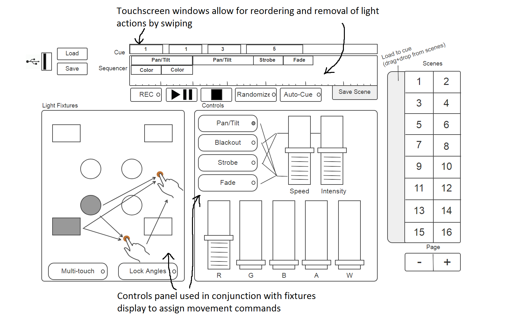

Task: Quickly and intuitively create lightshow sequences to be displayed during a performance- mixing actions such as color changes, pan/tilt, and light fades and playing them during the appropriate situation. Sequences also need to previewed and edited on the fly, and have the ability to be saved to an external USB when finalized.
Domain: Lighting techs setting up and operating for small-scale gigs such as school dances and weddings.
Interface: 